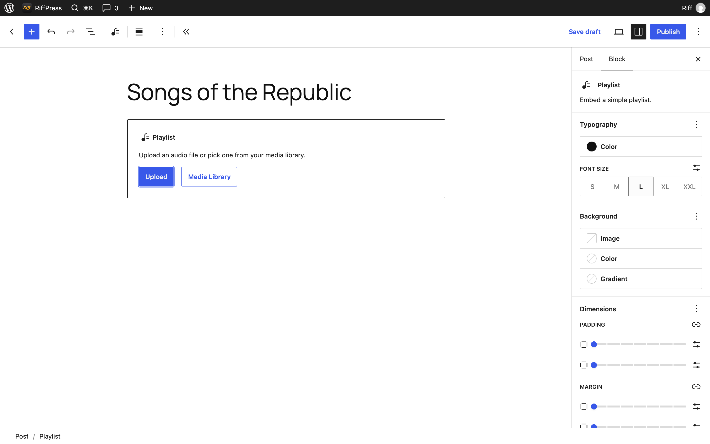

Add your music
How an album goes onto a site you own, starting from nothing. It takes no code and there is nothing to configure.
Before you start
You need a WordPress site. WordPress is free software that runs on a web host. Most hosts set it up in a few clicks, and any host will do as long as it runs WordPress 7.0 or newer. Once it is up, you sign in at your site's address followed by /wp-admin. That is the dashboard, where everything below happens.
Then install Riff. In the dashboard, go to Plugins, then Add New Plugin, then Upload Plugin, choose the zip, and activate it.
The demo is a WordPress site running in your browser with Riff already installed. Its dashboard is at /wp-admin too, so you can follow every step here without a site of your own.
An album is a post
In WordPress, a post is a page of writing made of blocks: a paragraph is a block, and so is a playlist. Riff plays any post with audio in it. The tracks are the files in its Playlist block, in the order they appear, and each one is filed under the album and artist in its tags.

Add the tracks
- Go to Posts, then Add Post.
- Type the album's name where it says Add title.
- Click the empty line below it, type
/playlistand press Enter. A Playlist block appears. - Press Upload and choose all the tracks at once. MP3, M4A, FLAC, WAV and OGG all work.
- Drag a track up or down in the list to change the order.
The Playlist block arrived in WordPress 7.1. On an older site, or if you prefer one block per track, type /audio instead and add an Audio block for each file; Riff reads them the same way.

Titles, artists and covers come from the files
When a file is uploaded, WordPress reads the tags inside it: the title, the artist, the album, and the cover art if there is one. Riff shows them in the player, on the lock screen and in the library. If a file has no tags, or the wrong ones, go to Media, then Library, click the file and edit them there.
Riff files each track under its album and artist from those same tags, so the Listen page can browse and search them. It also shows each track's quality, such as MP3 · 320 kbps or FLAC · 24-bit 96 kHz, as WordPress read it from the file.
The same screen has two fields Riff adds. Artwork is a cover for that one track, if it differs from the album's. Video version is a video in the library, for a song that has one; listeners can switch between the song and the video while it plays.


The album's cover is the post's featured image. In the editor, press Set featured image in the sidebar and upload it. If you skip this, Riff draws one: a record with one groove per track, each groove as long as the track, in wordpress.org's colours. The demo's albums wear them.
Publish
Press Publish, then View Post. Tap a track. The player bar appears along the bottom and keeps playing while you scroll, open another post, or lock your phone. Tap the bar for Now Playing.
One page where everything plays
Riff can also give the site a library: one page that lists every album, browses the Media Library by album, artist and track, searches it, and plays any of it without leaving the page.
Riff offers to make this page for you: press Create Listen page in the notice on the Dashboard. To make it yourself:
- Go to Pages, then Add Page, and title it Listen, or whatever you like.
- Click the empty line, type
/riffand choose the Riff block. - Press Publish.

To make it the front page of the site, go to Settings, then Reading, choose A static page, and pick it as the homepage.
Add app/ to the page's address, for example /listen/app/, and the same page opens as a player on its own, in Riff's dark look and without your theme. A browser can install that address as an app.
Many albums at once
If you have a folder of files per album and can use WP-CLI, run wp riff import with the path to the folder. It uploads the files to the Media Library the same way the dashboard does and makes one album post for each folder that holds audio. A cover image in the folder becomes the artwork, and a video named like a track becomes its video version. Run it again and it skips what it already imported; add --dry-run to see what it would do first.